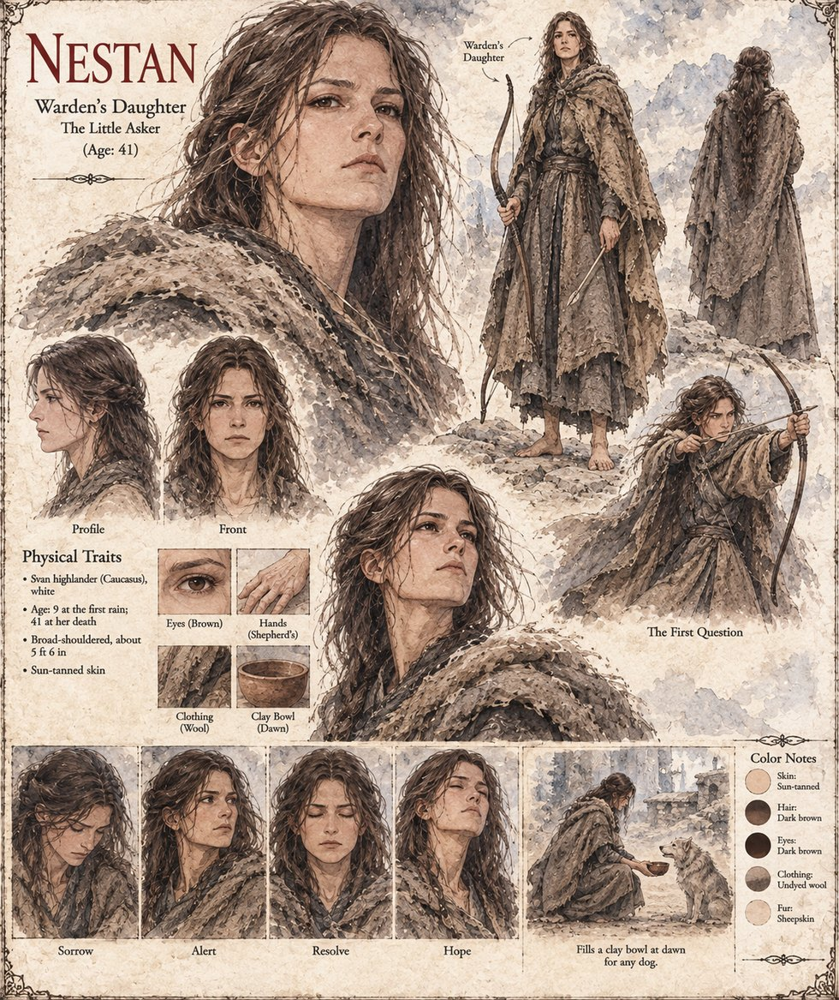

Nestan
The Little Asker · Ketevan’s daughter · nine at the first rain, forty-one at her death
Nine years old, barefoot, and constitutionally unable to be handed a debt without giving it back, the daughter of the Warden of Ormeli has a dog, Tsitela, and the two of them are the only creatures in Ormeli who had not yet learned to be afraid of the sky. In the third summer of the drought she climbs to the highest of the valley’s sixty-one terraces because the dog does, with the bow across her knees, and fits to the string the arrow nearest her hand. Children do not pray the way priests do: a priest asks for the rain in general, and a child asks for a particular thing and has a particular reason. Hers is a rain for Tsitela, on the four terraces below where the barley stands in the milk and the dog sleeps, on nobody else’s field, for one afternoon, and then the sun, because she had been raised by a woman who counted and knew that a wish with no end to it was a wish nobody had thought through. She adds, because she has been taught to, that it need only be a little. It rains on four terraces, on one dog, and on one girl, from the second hour after noon until the fifth, and not on the fifth terrace, whose lowest edge is marked by a line so sharp that the villagers who come pounding up the stairs stand with one boot in the downpour and one in dust. When Ketevan finds her, sitting in the mud with the dog’s head on her lap and the bow across her knees, she asks the only question her profession permits. Did you ask for it? “Only a little,” says Nestan.
Within a week a pilgrim woman from Nakuri has named her the Little Asker, and she spends the daylight under the great oak table in the tower hall with the dog, emerging only for meals and for the hair, a hundred strokes by the hearth, counted aloud in the flat voice Ketevan uses for sums. On the ninth night she says into the fire, “Was it wrong?” “It was small,” says her mother. At fourteen she rides a white mule in the Vintage procession in a mantle the Elara college has embroidered with rain, with the stony politeness of a hostage; at twenty-three she slips away from it in a borrowed grey cloak and is found peeling an onion at the kitchen door of the Fourth Cup by Medea, who tells her she is cutting it wrong. When Tsitela dies, at fifteen, of nothing but age, on the highest terrace in the shade of the fourth wall, Nestan says from the hearth, in the flat young voice of someone who has finally found the word, They ask for too much. Ketevan says that she knows. From that year she fills a clay bowl at the tower gate every dawn for any dog in the valley that cares to come for it.
In the thirty-second year, at forty-one, with the barley standing grey in the dust for six months and three of her mother’s letters unanswered, she tells Ketevan she is going to Samaghvto. It is twelve days on foot, and she can carry water for nine. Somebody ought to go and ask it for less. There are no arrows left in the world, her mother says; “I know,” says her daughter, “I think I only have to be there.” She walks it in eleven days, taking her water from the last wells by night. At the Wine Gate she asks the old fletcher whether his plain arrows answer, and is told I make arrows, and drinks, a little, only a little, from the Unclaimed Cup that Medea has left standing in the shuttered dark. In the court of the Hall the bow lies slack-stringed on its slab, cool, the pulse in the grip not rising. She draws a plain ash arrow, pictures the rain exactly as she did at nine, adds that it need only be a little, and looses. It comes down on the black basalt with a small dry rattle, like a dropped pen, and the sky stays blue. She was not disappointed. She sits down in the thin shade of the north wall with the bow across her knees, thinks of Tsitela and the smell of wet stone and the song, and the heat takes her in the hour after noon, gently, as it had taken the whole plain. Her mother’s ledger reads Nestan, daughter of Ketevan, aged forty-one. Asked: a little. Given: all of it.
The manuscript gives her ages of nine, fourteen, twenty, twenty-three and forty-one, her barefoot childhood, her hair, her mother’s counting, the mule, the bowl and the end. The sheet’s broad-shouldered build of about 5 ft 6 in, sun-tanned skin, brown eyes, dark brown hair, shepherd’s hands and undyed wool dress with a sheepskin cloak are its own, as are its panels Sorrow, Alert, Resolve and Hope and its scene The First Question. Its other scene, Fills a clay bowl at dawn for any dog, follows the manuscript.
“Somebody ought to go and ask it for less.”
Appears In

Related Subjects


Related Records

On the nineteenth of Ferren, in the hour when the whole valley lies flat under the heat, nine-year-old Nestan stands on the highest terrace of Ormeli, draws the bow at the zenith and asks for a rain for Tsitela, who lies panting in the one shadow left in the valley: four terraces, one afternoon, and then the sun. She adds, because she was taught to, that it need only be a little.

On the twenty-second of Havren in the thirty-second year, at noon in the white heat of the court of the Hall, Nestan, forty-one, lifts the cool bow from its slab, draws a plain ash arrow that does not so much as hum, and pictures the rain she pictured at nine, “exactly and only”; she adds that it need only be a little. The arrow comes down on the black basalt with a small dry rattle, like a dropped pen, and the sky stays blue, while Observer 506 watches from the shadow of the Hall’s arch with a bundle of plain arrows under his arm.